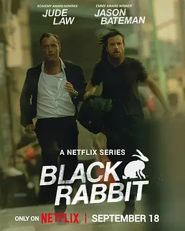

6.4
黑兔
Black Rabbit
2025
美国
评分 6.4
导演:
杰森·贝特曼 / 劳拉·琳妮 / 本杰明·塞曼诺夫 / 贾斯汀·库泽尔
演员:
裘德·洛 / 杰森·贝特曼 / 克利欧佩特拉·科尔曼 / 安马卡·奥卡福 / 索佩·迪瑞苏
类型:
剧情,惊悚,犯罪
剧情简介
在纽约灯红酒绿的夜路中，硬朗的餐厅老板杰克·弗里德肯用他的“黑兔”酒廊描绘一个属于他、属于城市夜色的理想版图。酒廊华丽而危险、聚光灯下暗影交错，他掌控着一切——直到兄弟文斯的回归打破了他精心经营的平衡。文斯从牢狱回归，怀揣债务与负罪，也带回旧时创伤与未解的秘密。当酒廊的珠宝派对被劫、内部员工被侵犯、家族旧账浮出水面，杰克发现自己不仅在为生意搏斗，更在为亲情、道德与权力角力。文斯带回的债务如暗流涌入，杰克不得不在兄弟情义与生意责任之间摇擺。餐厅里的灯光掩盖不了地下的拳击、威胁与算计；酒杯碰撞的声响里，却隐含着拳头与枪口的回响。厨师罗克西、投资人韦斯、设计师艾斯特尔……每一个角色都既是酒廊圆梦的一部分，也是裂痕的缝隙。杰克的完美象征摇摇欲坠，文斯的混乱如病毒侵入。而那个夜色中的“黑兔”，仿佛在嘲笑：所有光鲜背后，都可能藏着被吞噬的那一刻。随着旧时偶像、罪债、血缘纠缠汇聚，这家餐厅傍晚后化为一场无声战争。杰克能守住他的夜场帝国吗？文斯能从废墟中抓回尊严吗？当酒樽碎裂那一刻，他们都在面对同一个选择：是继续赢下去，还是彻底输掉。